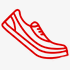

Делимся опытом
Наши сотрудники всегда готовы поделиться своим опытом,
так как сами бегают полумарафоны, переплыли Босфор, готовятся к соревнованиям по триатлону!
Заботимся о здоровье
Мы работаем для того,
чтобы Ваши занятия спортом шли на пользу Вашему здоровью и были в радость Вам и Вашим близким!

Учим бегать
Помогаем с обучением
правильной технике бега!
Дружим с крупнейшей школой бега в России -
I LOVE RUNNING.


отзывы клиентов
2 полумарафона
Новые цели - новый гаджет!
Спасибо, RunSmart!
1 полумарафон
С ними подготовился к своему первому полумарафону! Спасибо!!!
2 полумарафона
Позвонила, ребята поинтересовались моими целями и подобрали очень интересный вариант со скидкой! Теперь бегаю и наслаждаюсь бегом! Пробежала уже 2 полумарафона и несколько более коротких забегов и не намерена останавливаться!
Спасибо!!!